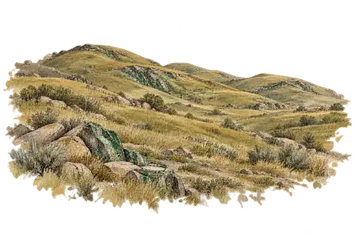
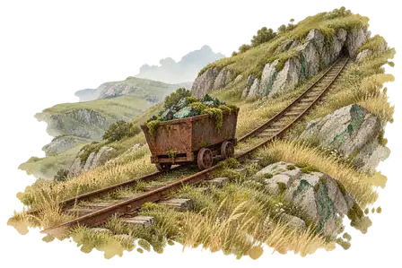
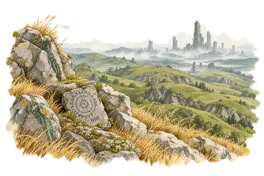
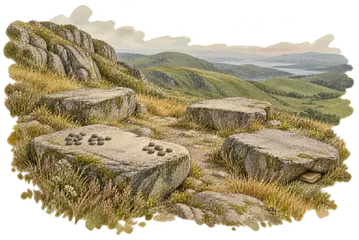

Planches artistiques séparées du jeu. La Vue du Sommet et le Replat restent repliés pour préserver les surprises du récit.
La terre à découvrir

Des collines rondes, striées de veines vertes et sombres.Paysage existant : référence de géographie et de palette.
I · Les Rails Rouillés

Rien ne retient le wagonnet. Il ne roule pas.La mousse a gagné le chargement. Le métal rouillé appartient à un vestige plus ancien, découvert dans les collines ; il ne décrit pas les moyens de production du joueur.
II · Découvrir la Vue du Sommet
Cette illustration révèle un élément du récit.

Les tours sont trop loin pour entendre quoi que ce soit.La tablette et les lointaines ruines suivent le récit de la Vue du Sommet. La ville reste une présence à l’horizon.
III · Découvrir le Replat
Ce lieu appartient à une exploration ultérieure.

Quatre pierres tournées vers le même coin du ciel.Le Replat conserve son identifiant historique « nid », mais il n’y a pas de nid d’oiseau dans le récit. Le dessin reste une étude du lieu ; le décompte précis des cailloux demeure porté par le texte.